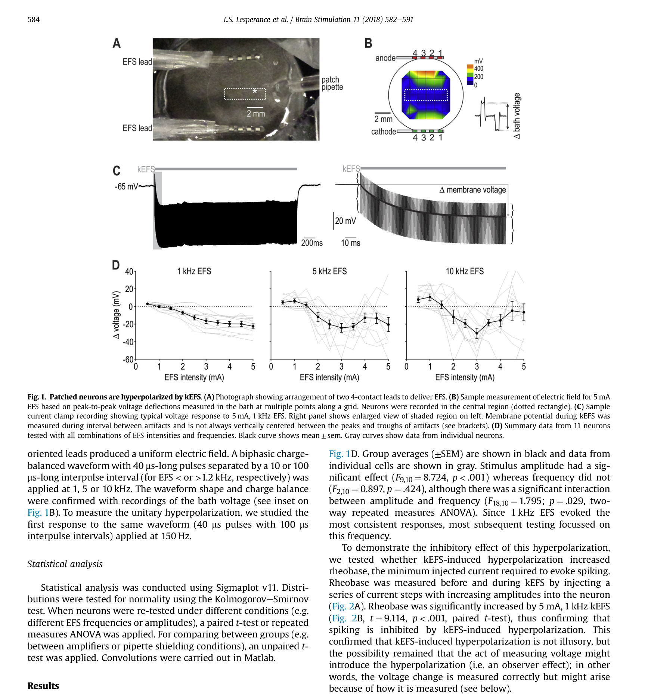
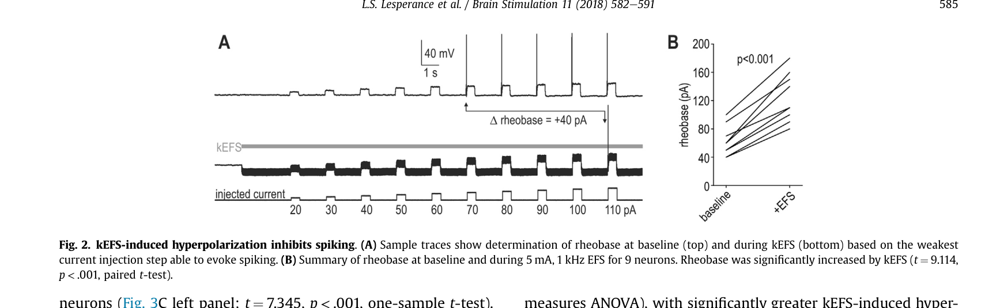
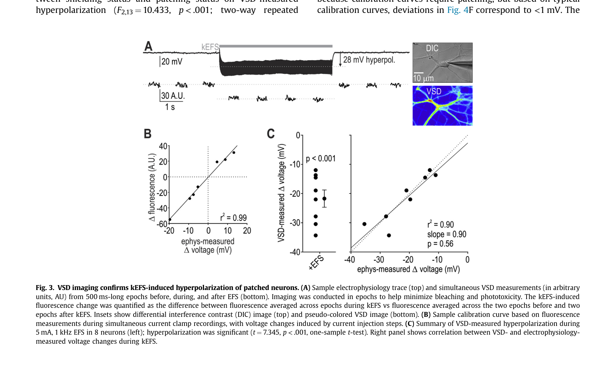
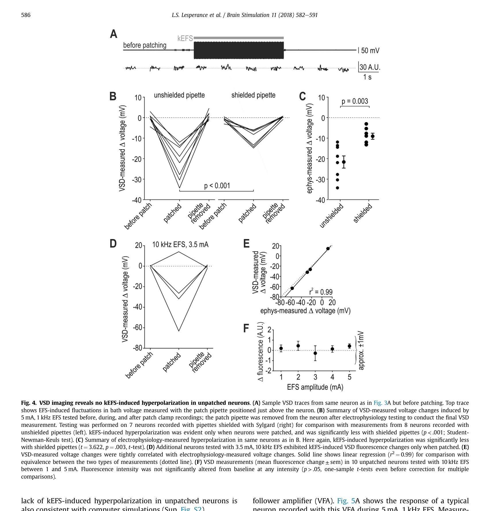
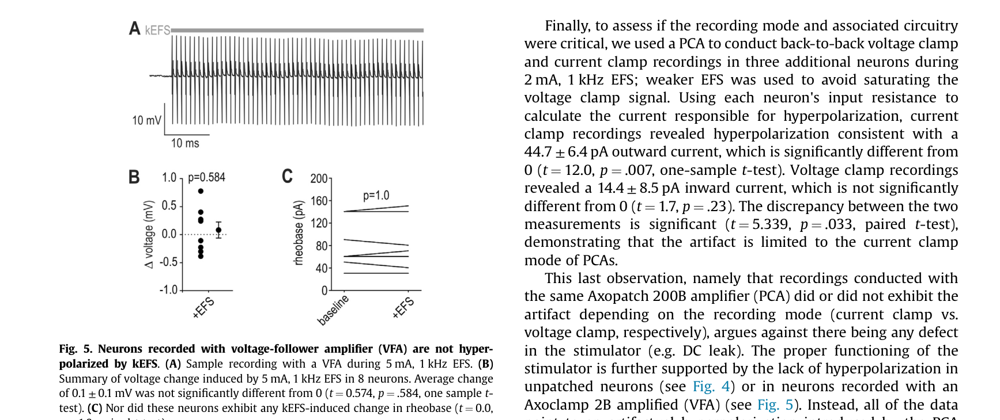
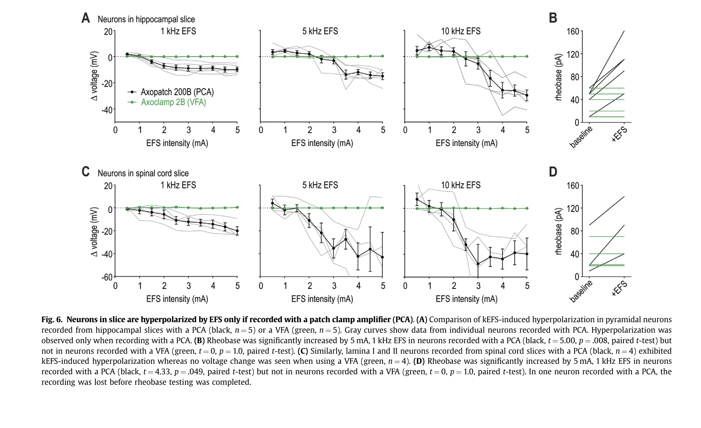
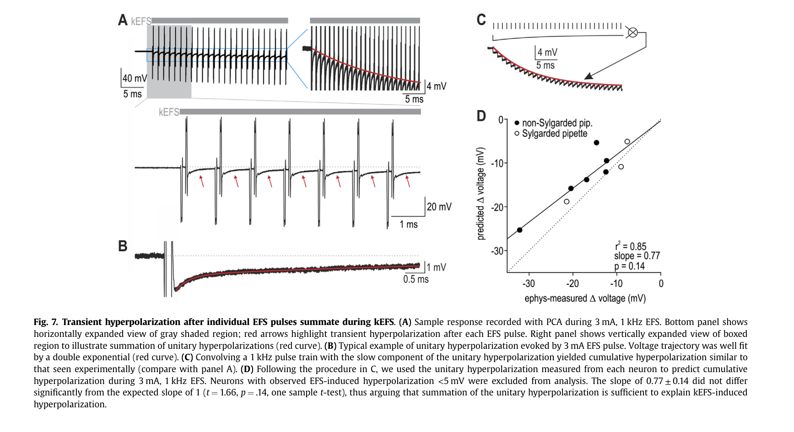
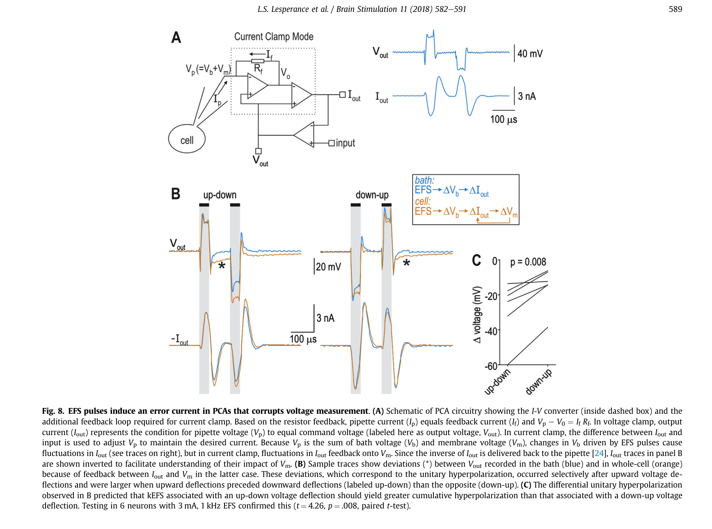

论文精读说明文档
Artifactual Hyperpolarization During Extracellular Electrical Stimulation
胞外电刺激下的"超极化"是真实的细胞响应，还是 patch-clamp 放大器自己制造的伪迹？这篇论文给出了明确答案。
论文信息
Brain Stimulation - 2018 - Lesperance - Artifactual hyperpolarization during extracellular electrical stimulation.pdf
一句话定位
千赫兹频率胞外电刺激（kEFS, kilohertz extracellular field stimulation）在 patch-clamp current clamp 记录中引起的神经元"超极化"，是放大器电路将浴液电压波动反馈为注入细胞的伪迹电流所致，而不是胞外电场直接作用于神经元的真实生理效应——这个区别，用不同放大器和光学方法就可以一锤定音。
为什么值得读
高频脊髓电刺激在临床已广泛用于慢性疼痛治疗，但机制不清。Lee et al. 曾报告 kEFS 使脊髓神经元超极化，并据此提出"直接膜抑制"是高频 SCS 的核心机制——如果成立，这将是电刺激神经调控领域的范式转变。Lesperance 这篇论文用五条独立证据线否定了这个结论，并把问题的根源精确定位在 patch-clamp 放大器（PCA, patch-clamp amplifier）current clamp 模式的电路伪迹上。
对正在做胞外电刺激 + patch-clamp 记录的你来说，这篇论文的价值超过一般的"方法论文"：它证明了在胞外电场存在的条件下，某些放大器构型不仅会测错膜电位，还会主动向细胞注入错误电流，物理改变被测量的对象本身。这正是你的差分测量工作要解决的核心问题族的一个更严重的变种。
具体联系见"和你的研究怎么接上"一节，此处先给出阅读动机：
- 你的 IEEE TIM 论文处理的是胞外电压（Ve）作为共模信号叠加在记录端的问题；Lesperance 的发现是同一物理场景下更深一层的问题——Ve 还会通过 PCA 反馈环路被转换成注入细胞的伪迹电流。
- 差分测量能消除 Ve 的加性叠加，但不能撤销 PCA 已经向细胞注入的伪迹电流——这个边界条件非常值得在你的论文 discussion 中 acknowledge。
- Lesperance 的方法论（VSD 光学验证 + 放大器对比 + shielding 实验）提供了一套判断"超极化是真实效应还是测量伪迹"的完整实验框架，可以直接类比到你自己的实验设计。
术语先说明
图文导读








机制横向对照
下表总结了本文识别的伪迹来源、对应的实验证据和可行的消除方案：
| 伪迹来源 | 关键证据 | 对真实 Vm 的影响 | 消除方案 |
|---|---|---|---|
| Pipette 天线效应：pipette 在浴液中拾取 EFS 电场，将 Vb 的波动叠加到 Vp | Sylgard 屏蔽 pipette 后超极化幅度显著减小（Fig. 4B-C） | 加性叠加，Vm 本身未被改变（可后处理消除） | Sylgard 屏蔽；差分记录（同时采集浴液参考点） |
| PCA current clamp 反馈环路：将 Vb 波动转换为注入细胞的伪迹电流 | 换用 VFA 后超极化完全消失（Fig. 5-6）；同一 Axopatch voltage clamp 模式无伪迹 | 物理改变真实 Vm（不可逆，后处理无法消除） | 换用 VFA（Axoclamp 2B / 900A）；或在 PCA 上增加浴液反馈补偿 |
| 单脉冲瞬态伪迹的 kHz 频率叠加：慢成分（τ ≈ 9 ms）在高重复率下累积 | 单脉冲 unitary 伪迹 + 卷积模型预测 = 实验结果（Fig. 7，r² = 0.85） | 通过累积伪迹电流最终改变 Vm | 根本解决：换 VFA；无法在 PCA 下通过波形设计完全避免 |
和你的研究怎么接上
1. 你们处理的是同一族问题的不同切面
你的出发点：Vm = Vi - Ve。胞外电刺激使 Ve ≠ 0，单端记录得到的是 Vi = Vm + Ve，包含共模污染。你的差分方案同时采集胞内端和胞外参考端，作差得到真实 Vm。
Lesperance 的发现：PCA current clamp 下，pipette 看到的是 Vp = Vb + Vm（Vb 即浴液电压，相当于局部 Ve）。EFS 改变 Vb → Vp 波动 → PCA 反馈环路将这个波动转换为注入电流 → 注入电流在细胞膜上积分 → 真实 Vm 被物理改变。
共同根源：胞外电场不为零时，测量系统无法正确分离胞内和胞外信号——这是你们两篇论文共同出发的基本物理约束。不同之处在于，你的工作聚焦在信号层面（Ve 作为加性噪声的去除），Lesperance 揭示的是仪器层面（Ve 被仪器反馈环路转换成了真实的扰动电流）。
2. 等效电路语言：用你最熟悉的框架理解 PCA 伪迹
把 PCA current clamp 画成等效电路：PCA 的核心是一个 I-V 转换器（即 voltage clamp 的基础），current clamp 在此基础上加正反馈实现"恒流注入"。正常情况下：
- 无 EFS：Vb ≈ 0，Vp ≈ Vm，PCA 正确追踪膜电位，反馈电流维持在设定值
- 有 EFS：Vb 波动（mA 级刺激电流在浴液中产生的局部电压，通常几十至几百 mV），Vp 随之波动；PCA 把 Vp 的变化误解为 Vm 变化，通过反馈环路将对应量的电流注入细胞
- 关键不对称：同样的 Vb 波动，对浴液（mA 级）是九牛一毛，但对细胞（pA 级即可显著影响 Vm）是巨大扰动
这个分析直接给出了你的差分方法的应用边界（见下一小节）。
3. 你的差分方法能解决什么、不能解决什么
这是读 Lesperance 之后最应该厘清的认识：
| 放大器 | Ve 对记录信号的影响 | Ve 对真实 Vm 的影响 | 你的差分能否修正 |
|---|---|---|---|
| VFA（Axoclamp 2B/900A） | Ve 作为加性叠加出现在记录中（Vout = Ve + Vm） | 不改变 Vm（VFA 不注入伪迹电流） | 可以完全修正：差分去掉 Ve，得到真实 Vm |
| PCA（Axopatch 200B / MultiClamp 700B）current clamp | Ve 叠加 + 额外的伪迹电流引起的 ΔVm | Vm 被伪迹电流物理改变（不可逆） | 只能部分修正：差分去掉 Ve 的加性叠加，但无法撤销已被注入的伪迹电流对 Vm 的改变 |
结论：VFA + 差分测量是目前最干净的组合，既避免了 PCA 伪迹，又去除了 Ve 的加性叠加。如果实验中必须使用 PCA（例如需要做 voltage clamp 和 current clamp 切换），那至少应该在 current clamp + EFS 条件下核查是否出现 Lesperance 描述的现象，并在论文中明确说明。
4. 对你 IEEE TIM 论文 Discussion 写法的直接参考
Lesperance 的结果为你的差分方法提供了两层 motivation，在论文中可以这样叙述：
5. 实验设计的互相参照
Lesperance 给出了一套"如何区分真实效应和测量伪迹"的实验框架，这对你自己的数据验证有直接参考价值：
- 光学独立验证：VSD 成像作为独立于电极的读出，如果电生理看到但 VSD 看不到，说明是电路伪迹，而不是细胞响应。你若有光学成像条件，可以用同样的逻辑检验你的差分方案是否还有残余伪迹。
- Pipette 去除对照：这是最简单的负对照——去掉 pipette 后，EFS 对细胞的"效应"应该消失；如果没消失，说明是真实的细胞响应；如果消失了，说明效应是测量系统引入的。
- 放大器构型对比：在你自己的实验中，比较 VFA 和 PCA 模式下的 EFS 记录，如果两者的差分结果一致，说明差分方法确实消除了 PCA 伪迹（至少在信号层面）；如果不一致，需要进一步追查。
- 卷积模型验证：Lesperance 用单脉冲响应的卷积预测 kHz 累积伪迹，并与实验数据对比（r² = 0.85）。如果你发现数据中有某种频率依赖的偏差，同样的卷积框架可以帮助判断它是否是单脉冲伪迹的累积。
证据链和局限
证据链的强度
- 五条独立证据线指向同一结论：patch-clamp 电生理、VSD 光学成像、两种放大器对比、Sylgard 屏蔽实验、卷积机制模型——每条单独都有说服力，五条交叉一致则排除了各自的混杂因素。
- 阴性对照设计严谨：未 patch 的神经元（VSD）、去掉 pipette 后、换用 VFA、同一 PCA 的 voltage clamp 模式——这些阴性对照精确地定位了伪迹的来源，而不只是"换个方法也看到了"。
- 跨制备类型验证：培养海马神经元、急性海马切片、急性脊髓切片，三种制备类型结果一致，排除了细胞类型和制备方法的特异性。
- 定量机制闭环：unitary 响应 → 卷积预测 → 实验测量，给出了从机制到现象的定量通路，而不只是定性解释。
相对薄弱的地方
- 只测试了两种放大器：Axopatch 200B（PCA）和 Axoclamp 2B（VFA），虽然换了一台 Axopatch 200B 验证了一致性，但没有测试 HEKA EPC-10、AM Systems 2400 等其他品牌的 PCA。作者的电路分析指出这是 PCA current clamp 模式的通病，但严格来说，其他厂商的实现可能有不同的带宽或反馈设计，对伪迹的幅度会有影响。
- 没有完整的定量传递函数建模：论文给出了定性的电路解释和对不对称性的定性预测，但没有用 PCA 的已知参数（反馈增益 Rf、带宽等）对伪迹的绝对幅度做定量仿真并与实验对比。这在原则上是可以做的，留下了一个理论上的空白。
- Sylgard 屏蔽只能部分消除伪迹：论文的 Fig. 4B-C 显示，屏蔽 pipette 后超极化显著减小但没有完全消除，说明 pipette 天线效应只是伪迹的一部分来源。PCA 电路内部还有通过何种路径传递 Vb 信号的问题，论文没有深入追究，这对想要在 PCA 条件下做硬件级修正的人来说是个缺口。
- 只讨论了 in vitro 场景：论文直接挑战的是 in vitro patch-clamp 实验的结论，但没有讨论 in vivo 情境（接地方式、动物组织的电阻率分布、浮动参考电位等都不同），也没有评估这个伪迹机制在 in vivo 记录中是否同样成立。
建议阅读顺序
- 先读 Figure 4 的图注和正文对应段落（unpatched 神经元 VSD 无响应）——这是全文最关键的一步，5 分钟可以建立核心直觉。
- 再读 Figure 8A 的电路图，理解 PCA current clamp 的反馈环路如何把 Vb 波动转换为注入电流——结合本文档的等效电路解释，大约需要 10 分钟。
- 然后回头看 Figures 1-2，理解作者是如何"先建立现象，再系统否定"的叙事结构。
- 看 Figure 5-6（VFA 对比），感受这个设计的干净程度——换一个放大器，所有伪迹消失，没有任何中间状态。
- 最后读 Figure 7（卷积机制模型），理解"kHz 累积 = 单脉冲伪迹线性叠加"的定量逻辑。
- 回看 Discussion，作者在这里对比了他们的结论和 Lee et al. 的解释，以及对临床 SCS 的影响——这部分对你写 IEEE TIM 的 Discussion 有参考价值。